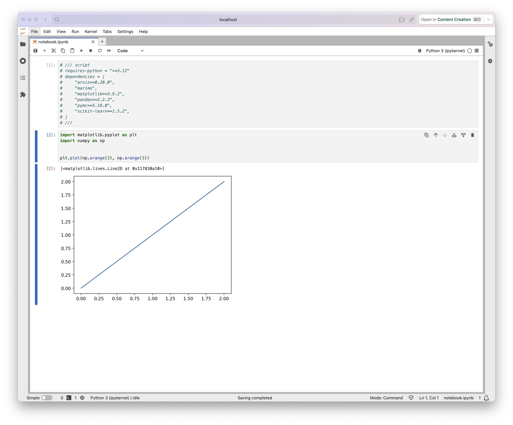

written by Eric J. Ma on 2024-11-08 | tags: python tooling data science notebook reproducibility juv uv environment management scripts analysis
In this blog post, I explore the innovative 'juv' package, which simplifies Python environment management for Jupyter notebooks by embedding dependencies directly within the notebook file. This approach eliminates the need for separate environment files, making notebooks easily shareable and reducing setup complexity. I also discuss integrating 'juv' with 'pyds-cli' to streamline ad-hoc data analyses within organizations, enhancing reproducibility and reducing environment conflicts. Curious about how this could change your data science workflow?
I recently learned about juv,
a package by my SciPy friend Trevor Manz.
It builds upon uv,
which, alongside pixi,
are the hottest things in Python (and more broadly, Data Science) tooling
since pip officially replaced easy_install
as the de facto way to install Python packages.
uv supports PEP723,
which is a Python enhancement proposal (PEP) that
specifies a metadata format that can be embedded in single-file Python scripts to assist launchers, IDEs and other external tools which may need to interact with such scripts.
Made more concretely for the purposes of this post, this enables us to specify the Python version that is supposed to be used to execute a script, and, more importantly, the dependencies that are needed!
It basically looks like this,
as the first cell in your notebook,
say, notebook.ipynb
# /// script # requires-python = ">=3.10" # dependencies = [ # "pandas==2.0", # "numpy>=2.0", # "matplotlib==3.1", # "scikit-learn", # ... # ] # ///
The following cells are the notebook code that you write in a normal fashion.
One can then use juv to run a notebook server with that auto-created Python environment:
juv run notebook.ipynb
And juv will auto-install the dependencies:
❯ juv run notebook.ipynb Reading inline script metadata from `stdin` Built minikanren==1.0.3 Built etuples==0.3.9 Built cons==0.4.6 Built logical-unification==0.4.6 Installed 60 packages in 329ms
You'll get this notebook server, in which you can run the code, just like in regular JupyterLab.

Compared to writing out a full pyproject.toml, requirements.txt, or environment.yml file,
this reduces the burden of distributing code + environments to a single file,
your notebook.
In terms of mental overload,
for an ad-hoc analysis conducted within a single notebook,
this is much better than needing to work within, say,
a scratch environment that is maintained to support multiple notebooks.
In the words of the marimo folks:
In other words, marimo makes it possible to create and share standalone notebooks, without shipping
requirements.txtfiles alongside them. This provides two key benefits:
- Notebooks that carry their own dependencies are easy to share — just send the
.pyfile!- Isolating a notebook from other installed packages prevents obscure bugs arising from environment pollution, while also hardening reproducibility.
To paraphrase juv's README
(which is accurate as of 5 Nov 2024),
this is the equivalent of having a fully-specified but also disposable environment,
in which the notebook itself specifies its own environment.
(I'll note that the marimo notebook also supports PEP723 as well!)
As a prototype of how this would work within company-internal tooling, I wrapped juv inside pyds-cli as part of a new pyds analysis init and pyds analysis run set of commands.
pyds analysis init does what my friend Logan Thomas gave as early feedback for pyds-cli's when I put together an initial project structure scaffold -- he wanted to see a "minimal initialization". Until PEP723 became a reality, I didn't have a good story for that. Now we do! To use pyds-cli to initialize a repo that contains only ad-hoc notebooks, we do:
pipx upgrade pyds-cli # upgrade pyds-cli using pipx, or else do `pip install -U pyds-cli` pyds analysis init
This will trigger a form that asks you for some information:
/tmp via 🅒 pyds-cli on ☁️ ❯ pyds analysis init [1/5] project_name (Name of the Project): dummy [2/5] short_description (A short description of the project): a test project [3/5] github_username (Your GitHub username): ericmjl [4/5] full_name (Your full name): Eric Ma [5/5] email (Your email address): e@ma 🎉Your analysis project has been created! Run 'pyds analysis add <package>' to add dependencies to your notebook Run 'pyds analysis run' to start working on your analysis
With the project_name being the name of the folder,
you can see that it is initialized with a notebooks/ directory
and a pyproject.toml
/tmp via 🅒 pyds-cli on ☁️ ❯ cd dummy (pyds-cli) dummy on main is 📦 v0.0.1 via 🐍 v3.13.0 via 🅒 pyds-cli on ☁️ ericmajinglong@gmail.com ❯ ls Permissions Size User Group Date Modified Git Name .rw-r--r-- 314 ericmjl wheel 5 Nov 08:09 -I .env drwxr-xr-x - ericmjl wheel 5 Nov 08:09 -- .git drwxr-xr-x - ericmjl wheel 5 Nov 08:09 -- .github .rw-r--r-- 5 ericmjl wheel 5 Nov 08:09 -- .gitignore .rw-r--r-- 0 ericmjl wheel 5 Nov 08:09 -- .pre-commit-config.yaml drwxr-xr-x - ericmjl wheel 5 Nov 08:09 -- notebooks .rw-r--r-- 311 ericmjl wheel 5 Nov 08:09 -- pyproject.toml .rw-r--r-- 325 ericmjl wheel 5 Nov 08:09 -- README.md
pyproject.toml contains a section for configuring pyds-cli
with default packages
that should be specified in every new notebook
created using pyds analysis commands:
dummy on main is 📦 v0.0.1 via 🐍 v3.13.0 via 🅒 pyds-cli on ☁️ ❯ cat pyproject.toml ───────┬──────────────────────────────────────────────────────────────────────────────── │ File: pyproject.toml │ Size: 311 B ───────┼──────────────────────────────────────────────────────────────────────────────── 1 │ [project] 2 │ name = "dummy" 3 │ version = "0.0.1" 4 │ dependencies = [ 5 │ "juv", 6 │ ] 7 │ readme = "README.md" 8 │ 9 │ # Default packages and python versions for new notebooks. 10 │ [tool.pyds-cli] 11 │ default_packages = [ 12 │ "pandas", 13 │ "polars", 14 │ "matplotlib", 15 │ "numpy", 16 │ "seaborn", 17 │ "scikit-learn" 18 │ ] 19 │ python_version = ">=3.10" ───────┴────────────────────────────────────────────────────────────────────────────────
Using pyds analysis,
we can use the create command,
which basically creates a new notebook in the notebooks/ directory
with the name that you specify,
and additional packages
on top of the default packages:
dummy on main is 📦 v0.0.1 via 🐍 v3.13.0 via 🅒 pyds-cli on ☁️ ericmajinglong@gmail.com ❯ pyds analysis create --help Usage: pyds analysis create [OPTIONS] NAME Create a new notebook in the notebooks directory with default dependencies. ╭─ Arguments ──────────────-----------──────────────────────────────────────────╮ │ * name TEXT Name of the notebook to create [default: None] [required]│ ╰───────────────────────────────────────────────────────────────────────────────╯ ╭─ Options ─────────────────────────────────────────────────────────────────────╮ │ --package -p TEXT Additional packages to include [default: None] │ │ --help Show this message and exit. │ ╰───────────────────────────────────────────────────────────────────────────────╯
Actually running it as an example:
dummy on main is 📦 v0.0.1 via 🐍 v3.13.0 via 🅒 pyds-cli on ☁️ ericmajinglong@gmail.com ❯ pyds analysis create test.ipynb -p numba -p pymc -p arviz Created notebook test.ipynb in notebooks directory Added 9 default packages Run 'pyds analysis run --notebook notebooks/test.ipynb' to start working
We get a new notebook that I can preview:
dummy on main [?] is 📦 v0.0.1 via 🐍 v3.13.0 via 🅒 pyds-cli on ☁️ ericmajinglong@gmail.com ❯ cat notebooks/test.ipynb ───────┬──────────────────────────────────────────────────────────────────────────────── │ File: notebooks/test.ipynb │ Size: 764 B ───────┼──────────────────────────────────────────────────────────────────────────────── 1 │ { 2 │ "cells": [ 3 │ { 4 │ "cell_type": "code", 5 │ "execution_count": null, 6 │ "id": "6f788e3b", 7 │ "metadata": { 8 │ "jupyter": { 9 │ "source_hidden": true 10 │ } 11 │ }, 12 │ "outputs": [], 13 │ "source": [ 14 │ "# /// script\n", 15 │ "# requires-python = \">=3.13\"\n", 16 │ "# dependencies = [\n", 17 │ "# \"arviz\",\n", 18 │ "# \"matplotlib\",\n", 19 │ "# \"numba\",\n", 20 │ "# \"numpy\",\n", 21 │ "# \"pandas\",\n", 22 │ "# \"polars\",\n", 23 │ "# \"pymc\",\n", 24 │ "# \"scikit-learn\",\n", 25 │ "# \"seaborn\",\n", 26 │ "# ]\n", 27 │ "# ///" 28 │ ] 29 │ }, 30 │ { 31 │ "cell_type": "code", 32 │ "execution_count": null, 33 │ "id": "dec2d058", 34 │ "metadata": {}, 35 │ "outputs": [], 36 │ "source": [] 37 │ } 38 │ ], 39 │ "metadata": {}, 40 │ "nbformat": 4, 41 │ "nbformat_minor": 5 42 │ } ───────┴────────────────────────────────────────────────────────────────────────────────
As you can see,
we have the default packages
but also pymc, arviz, and numba installed.
Underneath the hood,
juv is doing most of the magic of adding dependencies,
but pyds-cli simply composes in the ability to read from pyproject.toml.
In a world where company-specific tooling were built,
such tooling might also include automatically configuring keyrings for authentication on every call.
All in all,
I very much like the idea of configurable and disposable (but nonetheless configurable) environments.
juv helps support this idea!
It essentially takes what uv would do
and apply it to Jupyter notebooks,
auto-creating the necessary kernel behind-the-scenes.
My wrapping of juv within pyds-cli
merely has to add in opinionated configuration;
the rest of it is a near one-to-one mapping.
I like where the Python tooling ecosystem is headed,
the future is exciting!
@article{
ericmjl-2024-disposable-environments-for-ad-hoc-analyses,
author = {Eric J. Ma},
title = {Disposable environments for ad-hoc analyses},
year = {2024},
month = {11},
day = {08},
howpublished = {\url{https://ericmjl.github.io}},
journal = {Eric J. Ma's Blog},
url = {https://ericmjl.github.io/blog/2024/11/8/disposable-environments-for-ad-hoc-analyses},
}
I send out a newsletter with tips and tools for data scientists. Come check it out at Substack.
If you would like to sponsor the coffee that goes into making my posts, please consider GitHub Sponsors!
Finally, I do free 30-minute GenAI strategy calls for teams that are looking to leverage GenAI for maximum impact. Consider booking a call on Calendly if you're interested!